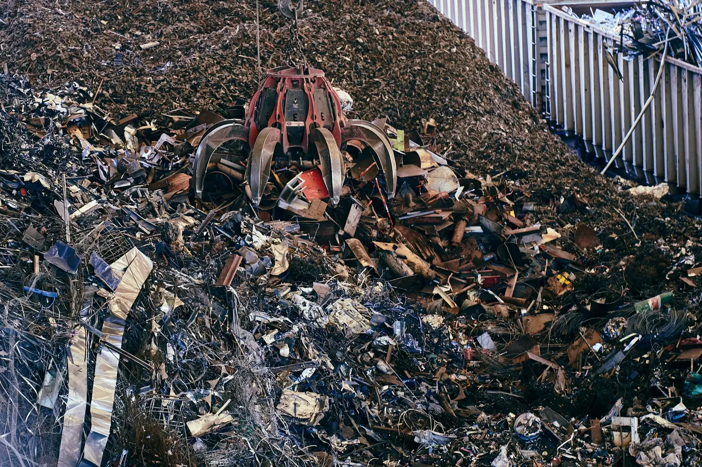
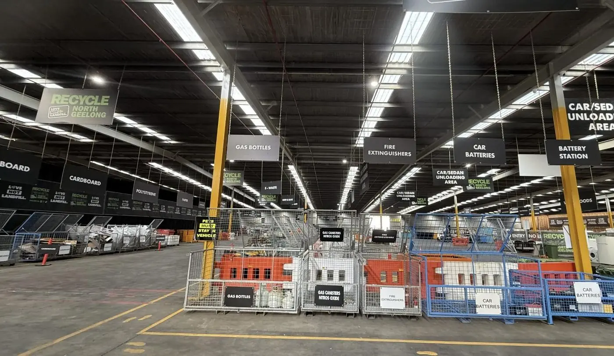
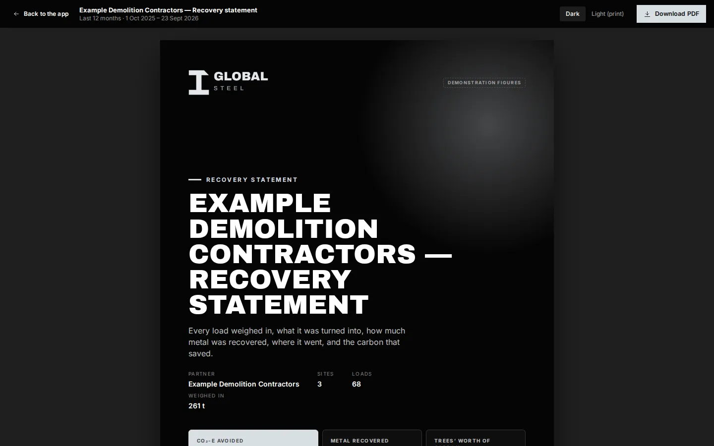

For partners & suppliers
Send us the metal. Get back the record.
If your organisation produces a steady stream of ferrous or non-ferrous metal — from demolition, manufacturing, fleet, fit-outs, cable or a transfer station — Global Steel turns it into a product, puts it back into production, and reports the outcome to you.
Who this is for
Organisations with metal to move
Councils & transfer stations
Ferrous and mixed metal from hard-waste and transfer-station streams, with a recovery statement you can put in front of councillors.
Demolition & construction
Structural steel, reinforcing, mixed metals and cable from strip-outs and demolition — by the load or by the project.
Manufacturers
Offcuts, rejects and end-of-line metal from production. Consistent streams, consistent pricing, and recycled-content evidence for your own reporting.
Electrical & telecommunications
Cable and copper from installs, upgrades and decommissioning. Granulated mechanically — never burnt.
Retail & commercial property
Aluminium, stainless and mixed metal from fit-outs, store closures and refurbishments across multiple sites.
Recyclers
A processing partner for metal streams that need cleaning, sorting or baling before they have a market — and an end market once they do.

What happens to it
Weighed in, processed, weighed out, reported
- Weighed in. Every load crosses the weighbridge at North Geelong and gets a docket.
- Processed. Spring steel through the shredder and magnets; ferrous sorted and baled; cable granulated; non-ferrous sorted by type.
- Weighed out. The recovered metal is weighed. Residual is reported, not hidden.
- Dispatched. To Australian mills, foundries and manufacturers, or containerised for export.
- Reported. A recovery statement for any period, a site statement per site, a statement per load — in your own portal.
What we take
Ferrous and non-ferrous, in commercial quantities
| Ferrous | Structural steel, reinforcing, sheet, appliances, mattress spring units, mixed ferrous |
|---|---|
| Copper & cable | Bare bright, insulated cable, motors and windings, mixed copper |
| Aluminium | Extrusions, sheet, frames, castings, cans in bulk |
| Brass & stainless | Fittings, valves, hardware, commercial-kitchen and equipment stainless |
| Mixed metals | Appliances, e-waste metal fractions, fit-out and strip-out material |
| Not accepted | Asbestos, prescribed waste, hazardous chemicals, gas cylinders under pressure, firearms or explosives |
How to start
- Tell us what you have — metal type, rough tonnes, how often, where it is.
- We confirm the fit and how it gets to North Geelong: your transport, ours, or a bin on site.
- First load is weighed in, processed and weighed out. Your portal is live from that day.
- Statements follow — monthly, quarterly or by financial year, whichever your reporting needs.

Why it matters to you
Evidence, not assurances
A council needs to show residents where the metal went. A manufacturer needs recycled-content figures it can defend. A property group needs an ESG line that came from somewhere. Global Steel gives you the weighed numbers, the method and the sources — in a statement you did not have to build.
About Global Steel ConnectHave a stream to move?
Metal type, rough tonnage, how often and where. We will tell you whether it fits and how to get it to us.